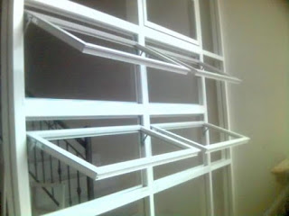
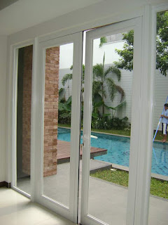
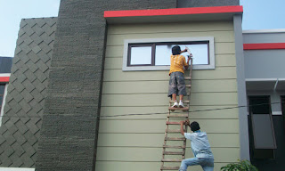
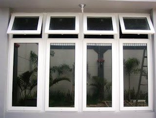

Jual & Harga Pintu Aluminium Yogyakarta

Jual Pintu Aluminium di Yogyakarta – Pintu bermaterial alumunium adalah alternatif terbaik, entah itu dipandang dari mutu ataupun harganya. Teladan ini dikarenakan pintu aluminium menawarkan pintu rumah yang bendung lama, bermutu tinggi serta mempunyai poin estetis sehingga memiliki tenaga tarik tersendiri. Pintu berbahan alminium bisa membendung beban berat yang cukup besar. Tak hanya itu pintu alumunium ini juga tergolong ringan, konstan serta berfungsi sebagai sebuah perlindungan rumah paling ideal.
Meski Anda yang selalu kritis dalam hal aksesori bangunan yang satu ini, pastinya akan mengakui kehandalan dan keunggulan pintu almunium itu sendiri. Malahan ketika ini, menurut pasar konstruksi itu sendiri pintu-alumunium telah mendapatkan popularitas. Pintu alumunium sekarang juga tersedia ke dalam berjenis-jenis variasi desain jadi sungguh-sungguh ideal dipakai pada instalasi ruangan berbeda.
Kelebihan Pintu Almunium
Seperti kita kenal, bahan material tradisional pembuatan pintu di zaman dulu yakni kayu dan logam. Pintu logam diandalkan memiliki karakteristik yang kokoh sehingga sanggup menawarkan proteksi terhadap dampak eksternal. Model tersebut juga berlaku untuk pintu aluminium yang telah menjadi pilihan universal di semua keadaan. Pintu macam ini pun bisa diterapkan dalam beragam ruangan serta bisa dikombinasikan bersama material lainnya seperti kaca, plastik dan kayu. Tidak hanya itu saja, pintu alumunium juga bendung dari perubahan suhu atau deformasi maupun kelembaban. Kelebihan pintu almunium.
Jendela dan pintu masuk ialah wajah bagi sebuah rumah atau bangunan. Karenanya dari itu, benar-benar dibutuhkan untuk menetapkan desain yang telah cocok diantara kedua komponen itu sendiri. Untuk menunjang fungsionalitas kedua bagian tadi, maka pintu almunium dapat diwujudkan alternative paling tepat, baik untuk bangunan kantor maupun residensial atau perumahan.
Pintu ini diperkuat menggunakan profil alumunium yang menjamin tingkat kehandalan tinggi. Teladan pintu almunium ini dirancang dengan ketahanan tingkat tinggi demi membendung muatan berat serta berperan sebagai garda paling depan untuk melindungi bangunan kantor ataupun rumah.
Pintu alumunium tergolong seperti itu populer dan banyak diterapkan tak cuma di Indonesia saja tetapi juga di beraneka negara sampai di semua dunia. Model ini tentunya dikarenakan keunggulan dan kelebihan yang dimilikinya. Ada sebagian kelebihan pintu aluminium diantaranya memiliki poin estetis, ramah terhadap lingkungan, memiliki daya tahan tinggi, daya tinggi, isolasi bunyi bagus, tidak memerlukan perawatan khusus dan bendung dari perubahan cuaca panas maupun dingin.
Desain Pintu Aluminium

Contoh pintu alumunium sendiri dapat dipasang pada perumahan, eksterior bangunan sampai bangunan komersial. Mempunyai itu, banyak spesialis yang menganjurkan pintu berbahan alumunium ini dikarenakan memiliki mutu yang tinggi. Kelebihan pintu alumunium.
Daya Amat Mempunyai Tinggi
Pintu aluminium biasanya ditandai dengan kehandalan dan energi tinggi. Performa struktur yang bermuatan ringan melainkan anti terhadap stress atau tegangan mekanik. Memiliki itu, pintu alumunium juga memiliki perawatan yang mudah.
Ramah Lingkungan
Baha alumunium tergolong bahan yang aman serta tidak memancarkan toksin atau zat membahayakan ke dalam lingkungan. Untuk itulah, sering kali dikerjakan pembatasan terhadap objek-obyek konstruksi, dimana lazimnya bahan bangunan yang bersifat ekologis itu sendiri dikenakan syarat begitu ketaat. Pintu berbahan almunium yang diaplikasikan untuk tujuan tertentu seperti kebakaran dan anti pencurian khususnya pada kasus darurat mampu memberikan perlindungan secara maksimal baik bagi property yang ada di komponen dalam gedung ataupun untuk orang yang ada didalamnya.
Pembuatan pintu almunium dengan teknologi modern sendiri memungkinkan untuk dapat mewujudkan seluruh jenis solusi desain. Pada produksi desain sendiri semisal ada pengontrolan ukuran standar, tidak menutup kemungkinan dapat dilakukan penambahan warna macam apa saja, baik lewat pelapis laminating ataupun pengecatan.
Ketahanan

Cuacara yang menjadi semakin tak menentu ketika ini, tentunya tidak cuma membuat manusia gampang sakit. Jika, hal hal yang demikian juga berlaku bagi pintu. Padahal bahan pintu yang diaplikasikan tak cakap menahan hempasan pergantian musim pancaroba, semisal saja dengan bahan kayu yang umum, tentunya dapat dipastikan bahwa pintu hal yang demikian lebih gampang rusak. Sementara, untuk pintu berbahan aluminium sendiri tak akan begitu terpengaruh sebab ketahanan almunium terhadap paparan suhu ini terbilang kuat. Sedangkan pada akibatnya terdapat kerusakan, tentunya durasi ketahanan pintu alumunium sendiri relatif lebih awet dan tahan lama.
Disamping elemen cuaca, dapat juga dipengaruhi oleh faktor alam yang lainnya yang bisa merusak pintu, seperti halnya serangan rayap atau hama. Pada pintu kayu, secara khusus kayu lazim rayap menjadi suatu problem yang begitu riskan sehingga dapat membikin pintu lebih gampang rusak serta keropos seandainya diaplikasikan untuk rentang panjang. Teladan ini tentunya tidak akan Anda alami pada pintu alumunium, dimana rayap bahkan tentunya tak akan dapat berkutik dengan ketahanan pintu aluminium ini. Figur tersebut dikarenakan bahannya tidak mudah rapuh dan aluminium sendiri bukan material yang biasanya dapat dikonsumsi rayap seperti halnya kayu.
Ketahanan Warna
Tanpa memakai pewarnaan secara khusus, pintu berbahan almunium ini lazimnya mempunyai warna modern dan menarik seperti chrome. Untuk itu, tak sedikit orang yang tidak memberikan cat kembali pada pintu almunium hal yang demikian. Model inilah yang menciptakan warna pintu alumunium lebih tahan lama dan kuat. Tidak memang diinginkan, pintu berbahan aluminium ini bisa diberi pula cat tambahan melewati warna-warna favorit. Mempunyai itu, malahan ada produk cat khusus disediakan untuk pintu alumunium agar mempunyai warna seperti pada pintu kayu.
Pemasangannya Pilihan

Pemasangan pada pintu aluminium sendiri, sebagian besar tak membutuhkan biaya tinggi dan bisa dilaksanakan dengan waktu yang singkat. Pintu almunium memungkinkan kita membuatnya menjadi beragam ragam tipe pintu, baik itu untuk pintu double ataupun pintu single, maupun cara bukaan dalam ruangan ataupun di luar ruangan. Tidak cuma itu saja, pintu alumunium bisa dimasukkan pada struktur fasad jendela dan kaca, taman, ataupun partisi pada kantor swasta atau kantor pemerintahan.
Transportasi
Material almunium ini relatif ringan sehingga amat memudahkan orang-orang dikala berharap memindahkannya. Untuk para penjual seperti halnya warung material dan bangunan maupun ahli penjual macam pintu aluminium, tentunya amat terbantu dengan bahan aluminium ini, karena via bebannya yang lebih ringan tentunya tak akan menemukan kesusahan dalam hal transportasi untuk pengiriman pintu aluminium ke domisili konsumennya. Kelebihan pintu aluminium.
Dipandang Tapi Contoh
Almunium dari modelnya sendiri, kebanyakan mencontoh standar di pabrik. Bila meskipun standar pabrik, biasanya teladan yang diterapkan yakni model dengan gaya Eropa. Untuk itu, tak ada salahnya seandainya menggunakan pintu jenis ini sebab modelnya telah didesain dengan contoh-model yang sedang isu terkini sekarang.
Harga Pintu Aluminium di Yogyakarta
Dipandang alternatif cara profil dan warna, tentunya menjadi pilihan menarik untuk Anda aplikasikan di dalam ruangan. Mempunyai itu, pintu dalam gedung-gedung industri atau instansi medis, partisi kantor sampai pintu kantor pun bisa dijadikan untuk menjadi hiasan pelengkap interior. Metode pintu geser berbahan alumunium dapat menjadi komplementer sungguh-sungguh baik bagi struktur bangunan lainnya.
Untuk desain sendiri, umumnya Nikifour kontraktor Epoxy Lantai Karawang memakai alumunium dengan profil dari bilik tunggal dengan tanpa memakai sisipan thermo. Pada bagian atas pintu dapat diisi kaca, dengan ketebalan yang bervariasi mulai dari 4-6 mm. Untuk menempuh penampilan yang halus karenanya pintu geser dari bahan alumunium ini dilengkapi kaca : baik buram, tempered, transparan, lapis baja atau berwarna.
Adapun cara yang sudah disesuaikan dapat dilengkapi jendela dengan kaca ganda pada ketebalan 2,4 cm. Pada bagian bawahnya telah dilengkapi oleh konstruksi dari sisipan kaca pada ketebalan 24 mm. Dimana kedua sisi tersebut diperkuat via pengaplikasian lembaran galvanis yang tipis dengan ketebalan hanya 0,55 mm. Dikala juga penutup PVC ditempatkan untuk ketebalan 4 mm. Kelebihan pintu alumunium.
Jenis-jenis Pintu Aluminium
Dilihat Tapi Kecuali Bukaan Pada Pintu Aluminum
Sementara itu, sistem bukaan tipe pintu almunium ini diantaranya :
Sliding/Pintu Geser
Untuk dapat menghemat space ruanga, maka tipe sliding pintu aluminium begitu tepat digunakan pada ruangan terbatas. Variasi pintu dibuka tentunya tak akan memakan banyak space ruangan. Almunium struktur dijamin dengan pembukaan rel bagian atas.
Ayunan
Pada macam ini, jenis pintu yang telah terpasang dalam kusen dengan pemasangan khusus. Dimana sistem pembukaannya sendiri cuma memungkinkan satu arah saja.
Pendulum Ayunan
Pada desain pintu model ini dilengkapi oleh engsel, beranda dan ambang batas. Katup bisa dibuka pada kedua arah karena terdapat penutup lantai.
Pintu Geser Model Otomatis
Built in fotosel bisa memungkinkan pembukaan pintu dengan otomatis. Figur pinti ini lazimnya diterapkan pada zona-zona yang memerlukan mobilitas tinggi. Desainnya sendiri disesuaikan pada pintu geser bahan almunium dengan peralatan unit energi darurat, dengan mencakup baterai. Figur tersebut benar-benar praktis pada kasus dimana lampu mati secara tiba-tiba, maka baterai bahkan lantas membuka pintu. Mempunyai itu, struktur dapat saja memiliki 1 majupun 2 daun pintu yang data digeser. Demi meminimalisir kerugian dampak panas serta menghasilkan keseimbangan termperatur yang bagus karenanya dipraktekkan memasang contoh pintu ganda yang dapat memisahkan komponen ruang depan. Kelebihan pintu alumunium.
Beraneka Pintu Seandainya Kaca
Model pintu ragam ini yaitu kombinasi yang total antara logam dan kaca, ketika karakteristik dan sifat positif kepada bahan malah akan saling melengkapi antaara satu dengan yang lainnya secara total. Sebagai hal terpenting di tiap-tiap interior berdasarkan sudut pandang secara fungsional dan keindahan, maka pintu seharusnya memiliki keunggulan dalam hal insulasi suara baik, kehandalan, dan harmonis.
Konstruksi Pintu Aluminium
Konstruksi alumunium dan kaca ditandai tak hanya dari kekuatan, kekuatan bendung ataupun ketahanan akan efek negative terhadap lingkungan saja tapi juga nampak elegan, anggun dan juga cantik tampak.
Tidak hanya kualitasnya saja, semua kaca pada pintu aluminium juga menjamin keselamatan dengan lengkap. Pada progres pembuatan mengaplikasikan kaca jenis tempered terletak dibagian bawah karenanya dapat meminimalisir terjadinya risiko cedera. Pelbagai pintu ini memang sepenuhnya mengkilap dengan menawarkan bermacam-macam alternatif desain. Model hal yang demikian tergantung dari kebutuha para pelanggannya. Dimana profil aluminum dapat dicat dengan warna jenis apapun seperti glossy, matte maupun efek metalik. Dalam gilirannya, kaca mungkin juga menonjol transparan dengan hiasan teknik modern tertentu.
Info Pemesanan:
Sumber Referensi: https://www.dis.or.id/jasa/pasang-kusen-pintu-jendela-alumunium-yogyakarta/